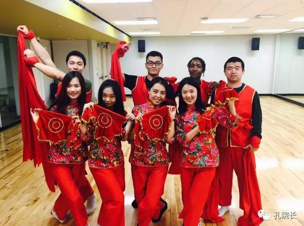
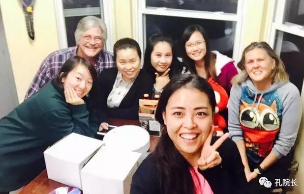

每日一篇——志愿者风采/ 底特律：一座城，满满爱
 517
517
距离任期结束已经过去了四月有余，然而每每翻看那些日子留下的照片，一年里所有经历过的精彩都历历在目。
2015年12月5日下午五点一刻，“穿越”了四十分钟，于同日下午五点五十五分到达美国底特律机场。开始写下我30岁前收获最多的一页。
【关于生活】
这是我曾经的卧室。为志愿者提供的是校内学生宿舍里一套两室两厅一卫的大公寓。为了保证志愿者居住的舒适度，住在这间公寓里的人数一直控制在3到4个之间。从2011年以来，这间公寓曾见证了数十位来伟恩工作的志愿者们生活的点滴。历任志愿者都亲切地称这里为“之家”。我到任三个月以后，我们搬至6楼，“之家”也随着我们一起搬迁。
吃，住，工作都在一起的我们，就像彼此的家人。公寓配有厨房，水电煤气都很方便，我们基本上一日三餐都可以自己DIY。每逢周末，我们都会邀请朋友们来家里作客。一来可以做一大桌菜，趁机解解馋，二来可以和朋友们一起度过一段欢乐的时光，暂时把乡愁抛在脑后。这样一来，每个周末我们都过的很开心，所以周末们也都溜得非常快。
在任的一年间，这间公寓里，有我们“姑娘”太多的欢笑，也少不了会有姐妹间的小争吵。我们一起为工作熬夜到凌晨三四点，一起去健身房，一起在家里喝醉了谈心事，一起收拾行囊出去旅行。日子久了，渐渐形成的默契让我们练就了一个眼神，半句话就能读懂彼此内心想法的本领。
【关于工作】
办公室距离我们居住的公寓走路仅需五分钟。可别小看了这五分钟，五分钟里你要过一条宽宽的马路，路过一座大大的停车场，还要经过一小段被我称为“四季风景展示板”的小道。每天上下班经过那里，都能清楚得感受到密西根可爱的四季。乍暖还寒时节，小道两侧大树上的点点绿每天都会用这五分钟告诉你，它们真的努力很努力的在与久久不肯离去的寒冬告别。
我们的办公室在学校外国语中心楼的一楼。志愿者们在一间大办公室一起工作。
刚接手工作的时候，我完全不知道如何下手。由于我们工作重心主要在策划各种各样的汉文化活动，以吸引更多的美国人来学习汉语，来了解中国。所以几乎每个月都会有一个相对较大的文化活动，小活动更是不计其数。以前的志愿者告诉我，来到这里你的工作就是你的生活，你的生活就是你的工作。我笑笑，以为那只是前辈的玩笑话。不曾想我离任前，最想留给下一任志愿者的话，居然也是这句话。有几次在办公室加班到深夜的时候，我们都会笑着重复：我爱工作，工作使我快乐！

因为人手严重不足，所以我们常常要招募大量的志愿者来协助我们筹办各类活动。而召集志愿者在美国来说并不像在国内那么容易。个中原因很大程度上跟中美文化差异有关。
美国人从小在学校就被培养要做好长期计划。所以无论是去医院看医生还是与朋友一个简短的约见，少则提前两三周，多则甚至要提前至少两个月放在自己的行程里。所以绝大多数美国人都过的按部就班，每天都有一早安排好的事情要做。尤其是大学生，在美国进大学容易，想要按时毕业拿到毕业证，课业压力不可小觑。这使得我们的志愿者招募工作变得尤为困难。因为我们的活动通常都在周末，但是学生们的周末很早前就会安排出去。
于是，我们就真的把生活变成了工作，视工作为生活。我还记得去年春晚前一个多月，为了让一位朋友在春晚给我们出节目，我们专门在周五晚上做了一桌菜，“诚邀”他来吃饭。吃完饭留他帮我们凑人数打麻将。打麻将的期间“一不留神”告诉，如果他能在猴年春晚唱首歌就太好了。结果不出我们意料，他欣然答应了。事后他还说，怎么觉得被我们套进去了，我们姑娘当然要矢口否认。
一年来，我在招募志愿者的过程中结识了很多朋友，收获了值得一生守护的友情。很多次如果不是有伟恩华人学生学者联合会的救场，活动就很难办下去了。正是有他们的助力，我们才能一次次的顺利的举办各类活动。也是有他们在背后给我们力量，所以我们才不会无助。
【关于我爱的他们】
我们的美方院长是个很幽默的老先生，我们大家都叫他老板。他总是用很有趣的方式体恤我们工作太辛苦。老板每天上班都会给我们带零食；他说他有个“喂肥计划”，每一届志愿者来了他都会悄悄的实施。因为他要把我们养的跟他一样圆，这样他看起来会比较瘦。直到我离开的时候他依然在为他的“双下巴俱乐部”而努力。不知道他现在有没有成功的案例。
不在伟恩的日子里，我常因想起这些场景而忍不住笑出声：老板时不时他圆圆的身体藏在门背后想吓我们一跳，最后却都会被他圆圆的肚子出卖；他常常讲笑话给我们听，结果自己笑的满脸通红，带我们去看美式足球嘶声呐喊的像个少年；带我们去吃正宗的墨西哥菜，说让我们不要吃太多要不然就要有个人留下来打工付钱；带我们去喝传统的苹果汁吃甜甜圈，说今天没关系，可以不减肥放纵一下。
因为这样一个可爱的老板，我们的志愿者工作处处洒满了笑声的种子。
中方院长范老师很像我们的妈妈。与她相识是在我任期结束的最后一个月，走的时候给她写的卡片上我说真的好遗憾，这么晚才见到她。是真的很遗憾。
她来美国整一个月的那天，范老师自己在公寓忙忙碌碌一上午给我们做了一大桌菜给我们三个志愿者吃，说感谢我们这一个月对她的帮助，感谢遇见我们。我们多想说，感谢您来到我们身边，感谢您愿意做我们的“闪电队长”，带领我们实行“瘦瘦瘦，瘦成一道闪电”的美丽计划，感谢您和我们一起在黑色星期五疯狂的熬夜扫货。这么多美丽的回忆，我真的好舍不得。

还有我在美国结识的两对夫妇，布鲁斯特夫妇和史密斯夫妇。
史密斯夫妇是一对特别酷的夫妻。家里的车库停着4台超酷炫的川崎摩托车。只要有假期，史密斯先生就会骑着他的摩托车，带着史密斯太太一起去骑行。结婚35年的他们，每天都会称赞对方，每天都会给对方见面吻和再见吻。我们总说去他家根本不用吃饭，狗粮吃的饱饱的。他们常常邀请我们一起参加一些很有美国特色的活动。每年的万圣节他们都会邀请我们去他们的家刻南瓜。他们常说，想给我们展示“最美国”的习俗和事物。

布鲁斯特夫妇是我特别爱的美国爷爷奶奶。他们退休很久了，却始终没有停止工作和学习。爷爷每天都要学习2个小时的汉语，奶奶每天都在为她的美术课忙忙碌碌。是的，没错，她在上老年大学。每天都要上至少三节课，每一次作业她都会非常认真的完成，每一次考试她都要力求完美。甚至于满分只有5分，老师一定要给她打6分才能表达对她成绩的满意度。
在我心里，他们与我自己的爷爷奶奶无异。相似的年纪，对孩子们相似的爱，和50年的互相守护，这所有的一切都让我觉得格外亲近。他们也很乐于做我们的美国爷爷奶奶，一两周见不到我们就会打电话询问是否一切都好。隔三差五就会邀请我们去家里吃大餐，学画画。所有的一切都让我觉得和在自己爷爷奶奶家没什么两样。
这两对夫妇只要是有时间，都会来帮忙。他们总说我们这群身处异国他乡的小孩子，总得要有人来照顾。每每想起他们，都会噙着眼泪充满感恩充满爱。
【关于底特律】
底特律一直是一所备受争议的城市。50年前号称美国小巴黎，50年后却被称作鬼城。赴任之前老爸叮嘱我要是觉得不安全就立刻回来。我内心也有点忐忑。然而在这里生活一周，一个月，一整个美丽的季节，最后完完整整地走完一年。我看到的是一个丰富的底特律。
这里确实有纪录片里烧毁的房子，废弃的工厂；也有纪录片里没有的湖边小岛上绚丽的夕阳和晨光，繁华喧闹的球场和的中心，还有那些努力生活也享受生活的底特律人民。而回首走过的一年，底特律于我而言，无疑是非凡的。
在这里，我每次遇到陌生人都会收到温暖的微笑；在这里我第一次独自开车在高速上飞驰个把小时去购物；在这里我看到了最想看到的风景，将最难得的友情装进心里；在这里我被很多人守护被很多人爱，也学着他们的样子去守护去爱；在这里我留下了最深刻的情绪和想念。这样斑斓丰富的底特律，怎么能够不非凡。
感恩祖国成全我曾在这座城市从事着让我无比热爱的工作，成全我遇见那些可爱的人儿，成全了这段承载了我最美年华的青春。
2017年1月1日，我踏上了返回祖国的飞机。背后留下千般不舍千般爱，我是灰太狼，我一定会回来。
作者简介：
夏海婷，毕业于华中科技大学汉语国际教育专业，美国伟恩州立大学孔子学院汉语教师志愿者。